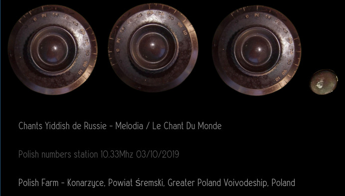

Lee Tusman
↩ Everyday
<
>
Title: Radio Prototype
Year: 2024
Medium: Interactive Website, Web audio
URL: Prototype radio↩
Description:
A prototype of a radio that tunes in three audio sources as first "mvp" to be developed further while in residency: Chants Yiddish de Russie - Melodia / Le Chant Du Monde, Polish numbers station 10.33Mhz 03/10/2019, Polish Farm - Konarzyce, Powiat Śremski, Greater Poland Voivodeship, Poland.

 ©opyleft
©opyleft